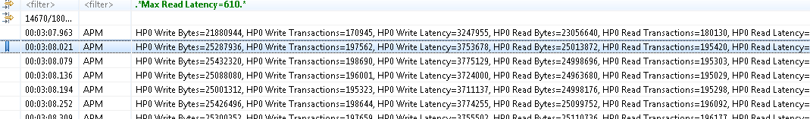

Any event of interest can be tagged with a bookmark.
To add a bookmark, double-click the left margin next to an event, or right-click the margin and select Add bookmark. Alternatively use the menu. Edit the bookmark description as desired and click OK.
The bookmark will be displayed in the left margin, and hovering the mouse over the bookmark icon will display the description in a tooltip.
The bookmark will be added to the Bookmarks view. In this view the bookmark description can be edited, and the bookmark can be deleted. Double-clicking the bookmark or selecting Go to from its context menu will open the trace or experiment and go directly to the event that was bookmarked.

To remove a bookmark, double-click its icon, select Remove Bookmark from the left margin context menu, or select Delete from the Bookmarks view.